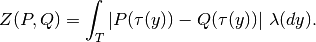
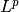
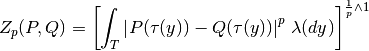

kr¶
kr calculates the Kantorovich-Rubinstein distance and corresponding p-values.
usage: kr [options] placefiles
Options¶
| --point-mass | Treat every pquery as a point mass concentrated on the highest-weight placement. |
| --pp | Use posterior probability for the weight. |
| -c | Reference package path. |
| -o | Specify the filename to write to. |
| --out-dir | Specify the directory to write files to. |
| --prefix | Specify a string to be prepended to filenames. |
| -p | Exponent for KR integration, i.e. value of p in Z_p. Default 1. |
| --normalize | Divide KR by a given value. Legal arguments are “tree-length”. |
| --seed | Set the random seed, an integer > 0. Default is 1. |
| --list-out | Output the KR results as a list rather than a matrix. |
| --density | Make density plots showing the distribution of randomized values with the calculated values |
| -s | Set how many samples to use for significance calculation (0 means calculate distance only). Default is 0. |
| --gaussian | Use the Gaussian process approximation for p-value estimation |
Details¶
kr calculates the Kantorovich-Rubinstein distance between collections of placements (given by their place files) by its closed form formula

This is a generalization of the UniFrac distance (UniFrac can only place mass at leaves and cannot accomodate uncertainty). There is a further generalization to an  Zolotarev-type version: for we have the distances

which can be used to vary the impact of mass relative to transport.
A larger  increases the impact of differences of mass, while a smaller emphasizes distance traveled.
increases the impact of differences of mass, while a smaller emphasizes distance traveled.
Note that the significance p-values calculated by -s or --gaussian are not corrected for multiple comparison.
The assessment of significance is tricky for metagenomic sampling. The randomization test (that seems to be very commonly used in association with UniFrac and that is implemented here with the -s flag) does not have wonderful properties when in the setting of incomplete sampling with non-independent observations. This is commonly the case for metagenomic sampling. Imagine, for example, that we have a random observation process on the tree equipped with some collection of “base observations.” Each process takes a random subset of those base observations and then throws down some number of reads for each observation in that set, the number of which has mean >> 1. If the set of base observations is large compared to the number of sample observations, then two draws will always appear significantly different even though they are from the same underlying process. Thus I would only trust a rejection of the null when sampling is quite deep and the same primers are used for the experiments being compared.
See Evans and Matsen for more details on phylogenetic KR.